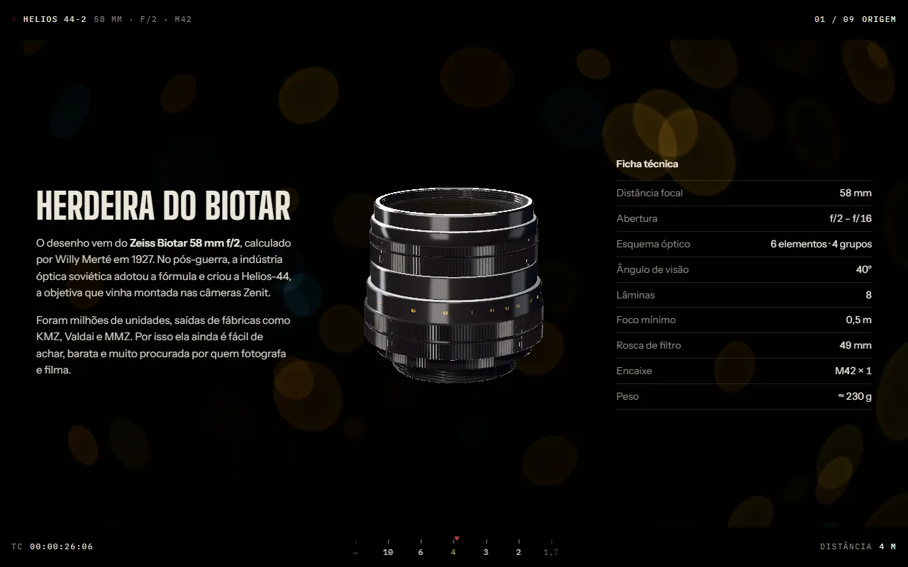
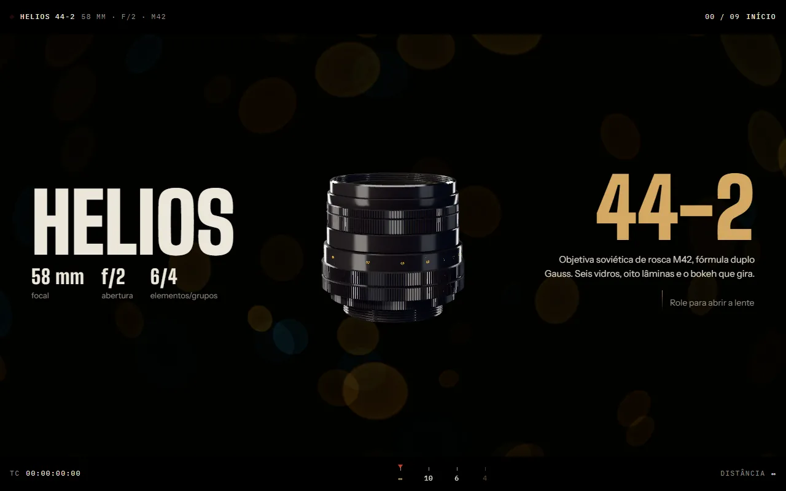
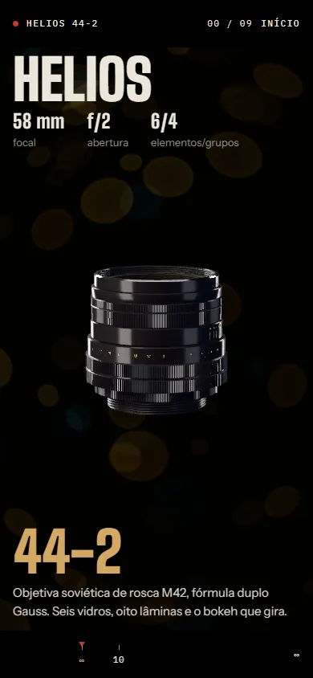
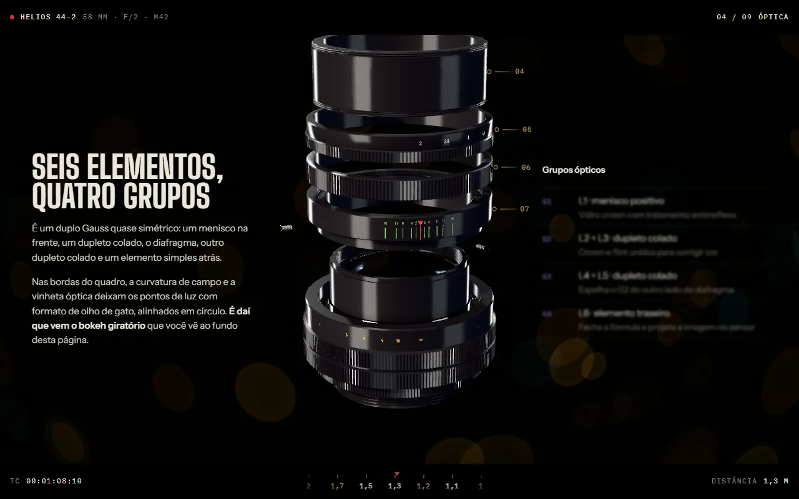
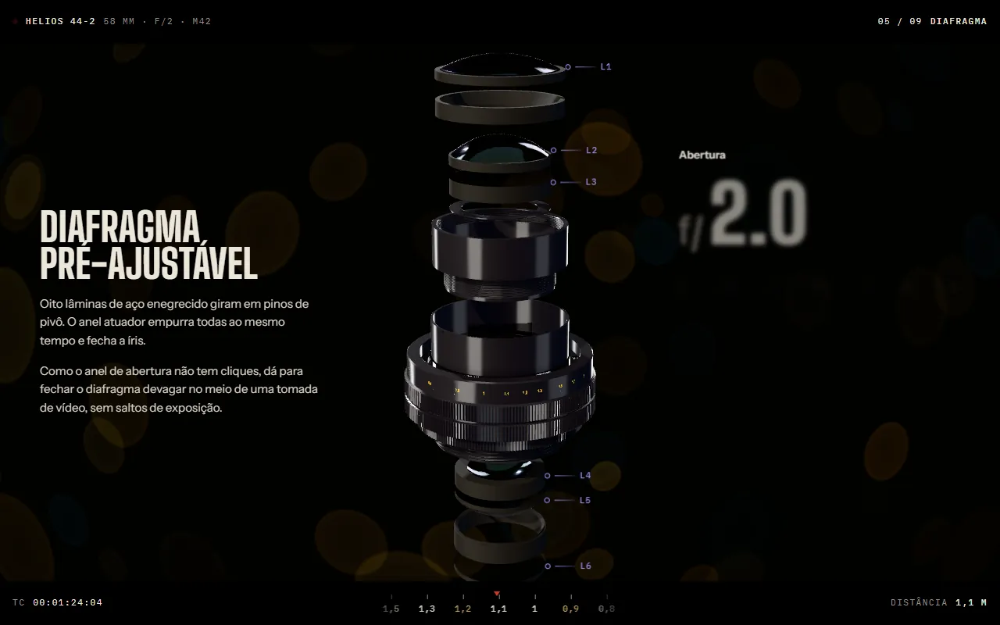
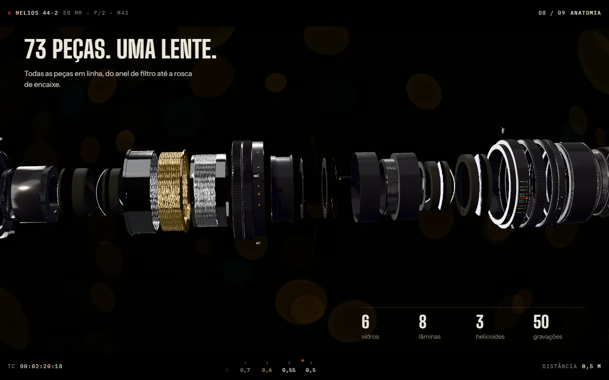

História e ficha técnica
A página começa pelo contexto: de onde vem o produto e os números que importam, numa ficha fácil de consultar.
Página que apresenta uma objetiva fotográfica clássica por dentro. Conforme a pessoa rola, o modelo 3D se desmonta peça por peça, e cada parte ganha nome e explicação.
Projeto conceitual: um estudo de apresentação de produto, sem cliente e sem venda.


Role a página dentro do quadro para abrir a lente. São nove capítulos, da história à vista de todas as peças em linha. O modelo 3D leva alguns segundos para carregar.
Um jeito rápido de saber se um projeto assim faz sentido para você.
As partes que mais ajudam o cliente a decidir, e o que cada uma resolve.

A página começa pelo contexto: de onde vem o produto e os números que importam, numa ficha fácil de consultar.

Ao descer a página, o modelo 3D se separa em partes. Cada peça recebe um número, um nome e uma frase sobre o que faz.

No capítulo do diafragma, a página mostra as oito lâminas e a escala de abertura, de f/2 a f/16. A pessoa entende o que cada controle faz sem abrir um manual.

O mesmo modelo 3D roda no celular, com textos e números reorganizados para a tela estreita.
Cuidados que não aparecem à primeira vista, mas fazem diferença no dia a dia.
O modelo foi comprimido para pouco mais de 3 MB, e a página mostra o progresso enquanto ele carrega.
O layout foi testado do celular ao monitor grande.
Todo o conteúdo é texto na página, não imagem: os buscadores leem e a pessoa pode copiar.
A mesma estrutura de capítulos funciona para qualquer produto que possa ser modelado em 3D.
Você conta o contexto e recebe por escrito o escopo, as entregas e o investimento antes de qualquer execução.